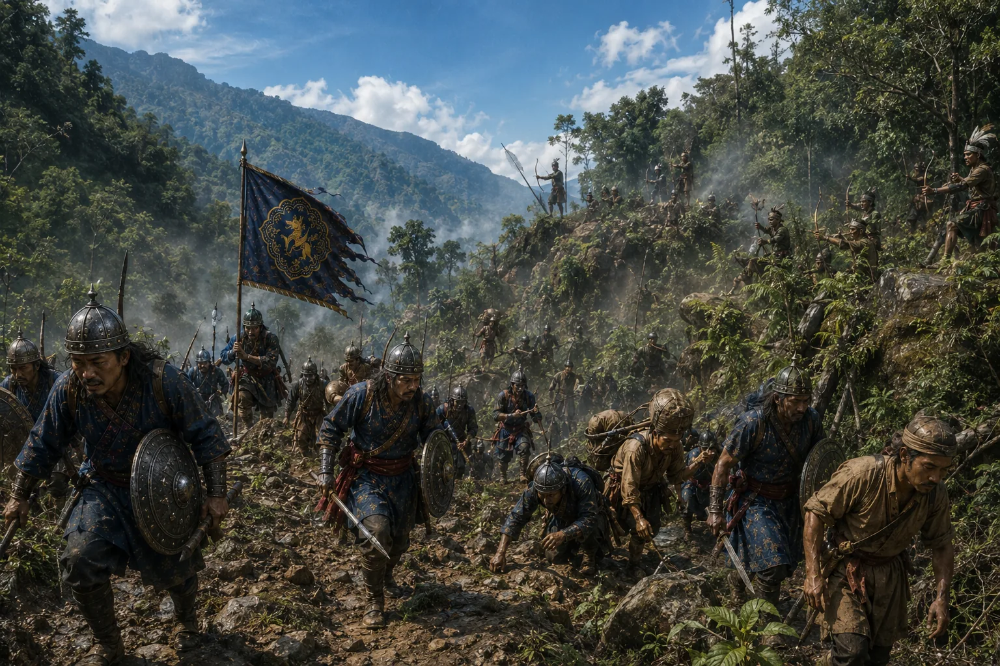

The Expedition Against the Daflas
1671–1672 · Against the Mughal Empire

Expedition launched to pacify Dafla hillmen raiding north bank villages; harsh conditions test the royal army.
Sources have not yet been catalogued for this record.
People: Udayaditya Singha (Sunyatphaa)